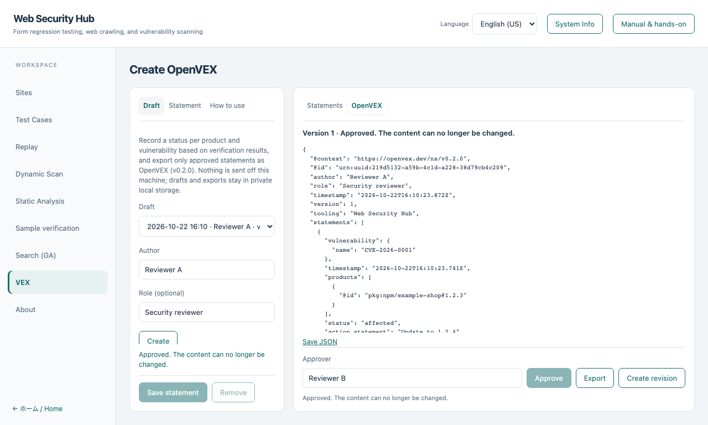

OpenVEX hands-on
日本語 · Genetic search · Basic course
Turn verification results into an OpenVEX (v0.2.0) document. Evidence suggests a status, a named reviewer decides, and only an approved draft is exported.
Nothing is sent off this machine; drafts and exports stay in private local storage.
1. Run a verification first
Run a sample verification or a genetic search. Their saved results appear as evidence in the VEX workspace, each marked Reproduced, Not reproduced or Inconclusive. A run that was cancelled, timed out or stopped early is Inconclusive, never Not reproduced. Source-only results are always Inconclusive.
2. Create a draft
Choose VEX in the left navigation, enter the author (and optionally a role) under Draft, and choose Create.
3. Add statements
Open Statement. Enter the vulnerability ID (for example a CVE or GHSA ID, or your own ID), the product ID (a package URL such as pkg:npm/example-shop@1.2.3, optionally with its SHA-256), and choose the verification results that support the statement. Suggest status from evidence proposes affected only when a selected result reproduced; otherwise it proposes under investigation.

| Status |
What it needs |
| Under investigation |
Nothing else. This is what non-reproduction or inconclusive results can support |
| Affected |
An action statement. Basis Evidence also needs a reproduced result among the selected evidence |
| Not affected |
A justification, and the basis Reviewer's decision |
| Fixed |
The basis Reviewer's decision |
Not reproducing a finding does not establish not affected or fixed, so those two statuses cannot be based on evidence. Record them as your own decision; they are exported with the note that the reviewer asserted them. Select a row in the statement list to edit it, or use Remove.
4. Approve
Enter the approver's name and choose Approve. The workspace re-reads the evidence and rejects the approval if a result changed or was removed. An approved draft cannot be edited.
5. Export
Choose Export to show the OpenVEX JSON under OpenVEX, and Save JSON to download it. Each document has a stable ID, a version, the author, a timestamp and one entry per statement.
6. Revise
To change an approved document, choose Create revision. The revision keeps the document ID and raises the version; edit it, approve it again and export.
A finite verification that finds nothing does not prove a product is safe, which is why it never produces not affected on its own.